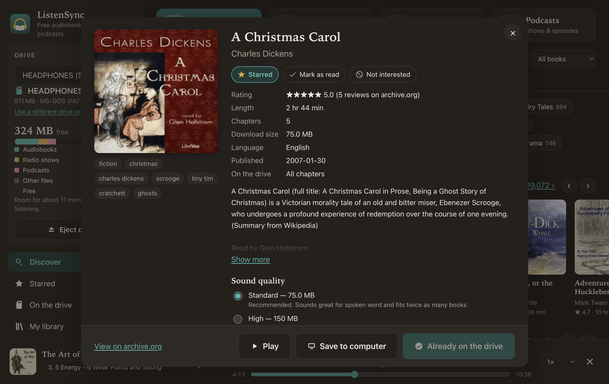
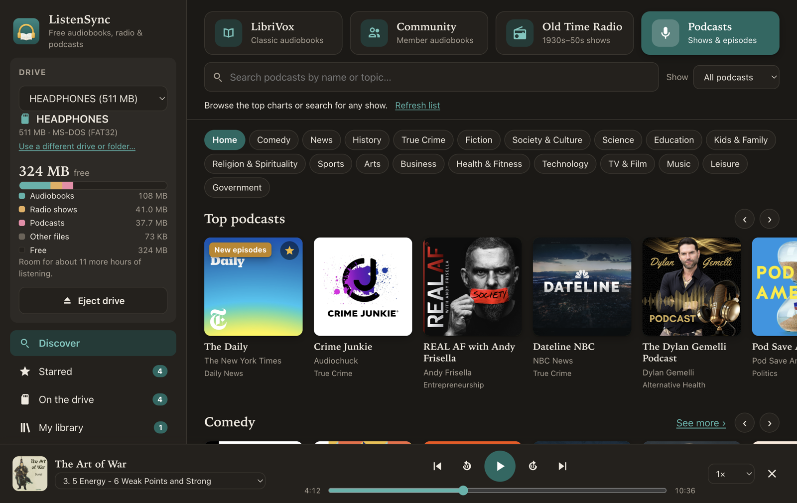
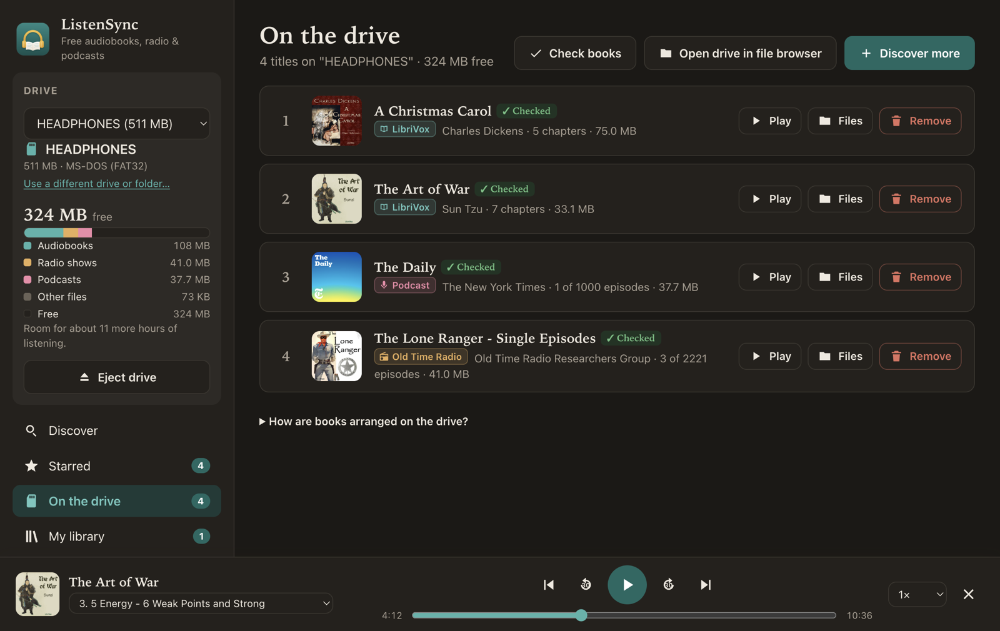
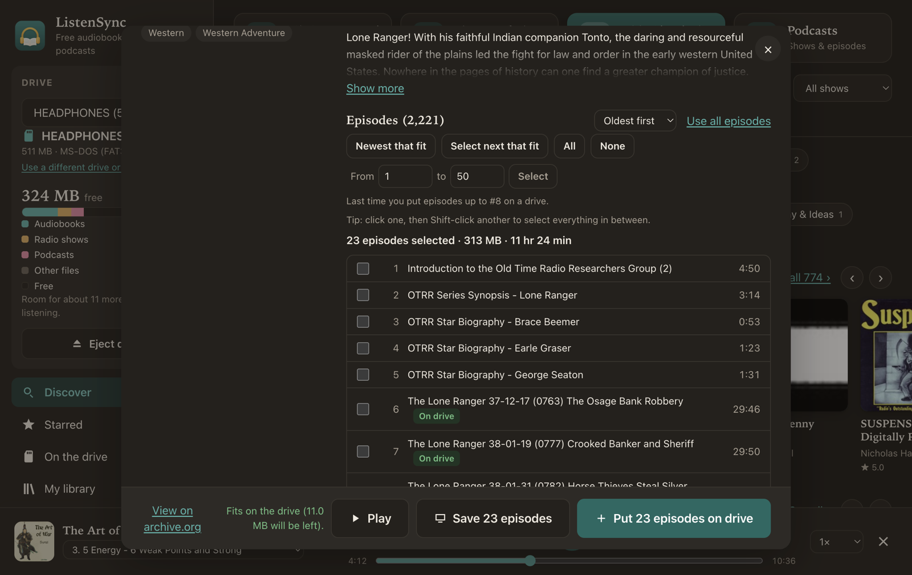
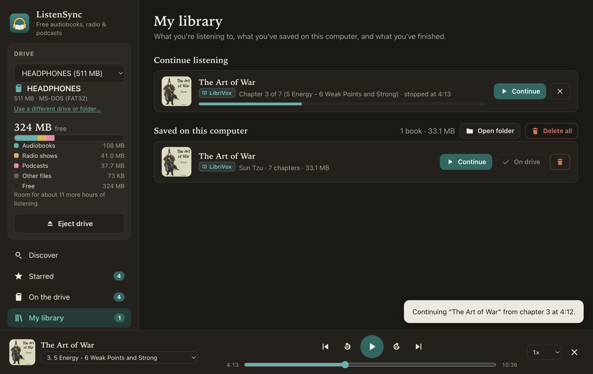
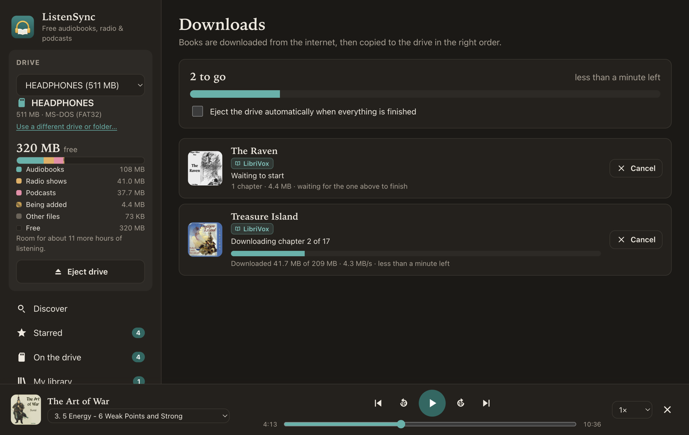

What it does
Thousands of free titles
Audiobooks from LibriVox and the Internet Archive, classic radio dramas, and podcasts, with covers, ratings and genres.
Ready for simple players
Copies to SD cards, USB sticks and MP3 players in the right play order, even for headphones that ignore file names.
Checked and fixable
Shows what's on the drive and how much room is left, checks every file, repairs damaged copies and ejects safely.
Listen on the computer
Built-in player that remembers where you stopped, whether you're listening on the computer or from the drive.
Long series, a batch at a time
For podcasts and radio shows with hundreds of episodes, pick the next batch that fits and rotate through them.
Follow podcasts
Follow your favorite shows and see when new episodes are out, then put the newest ones on your player.
A closer look






Opening it the first time
Mac
- Open the downloaded .dmg and drag ListenSync to Applications.
- Open ListenSync. macOS says it can't check it for malware. Click Done.
- Go to System Settings → Privacy & Security, scroll down and click Open Anyway.
Windows
- Run the downloaded Setup file.
- If you see "Windows protected your PC", click More info, then Run anyway.
- After that, ListenSync updates itself when new versions come out.